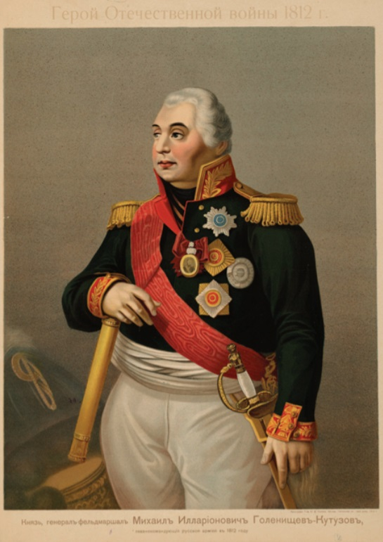
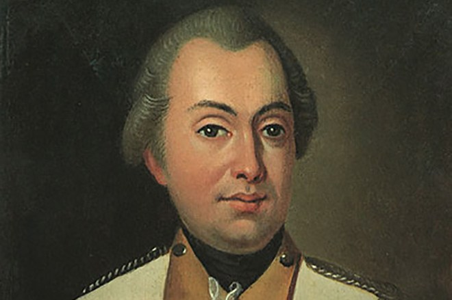
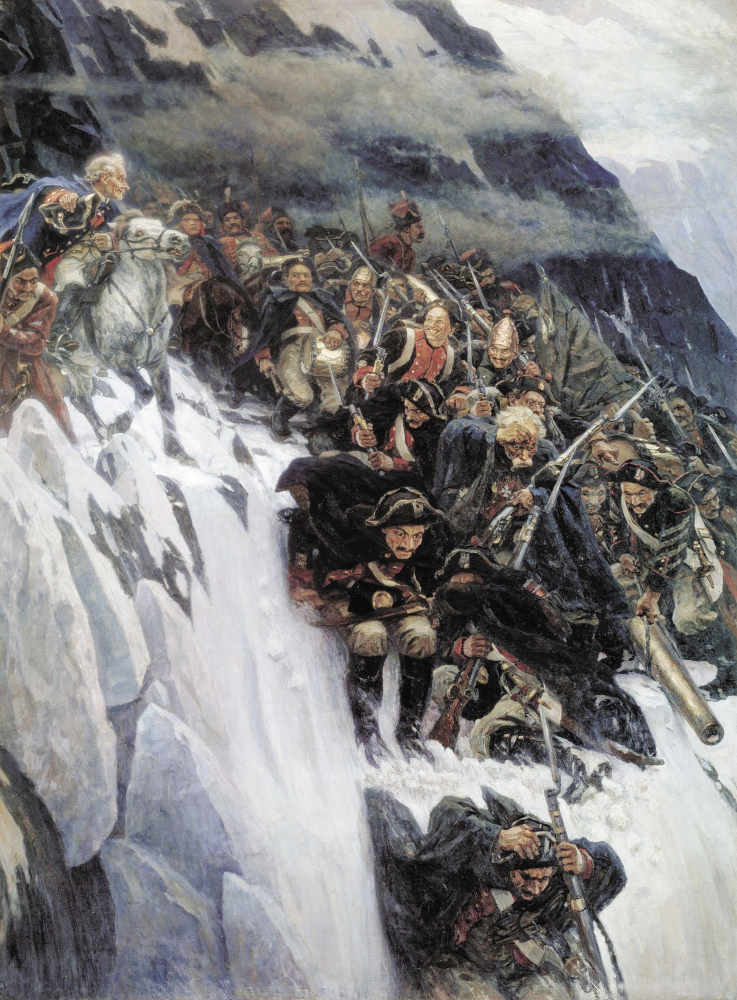
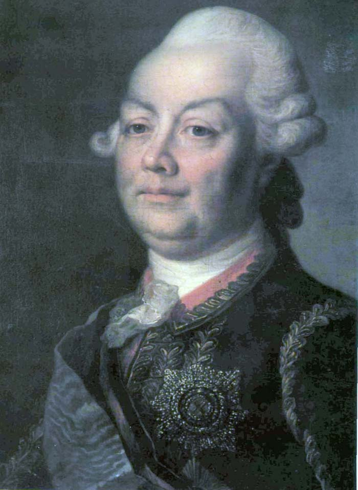
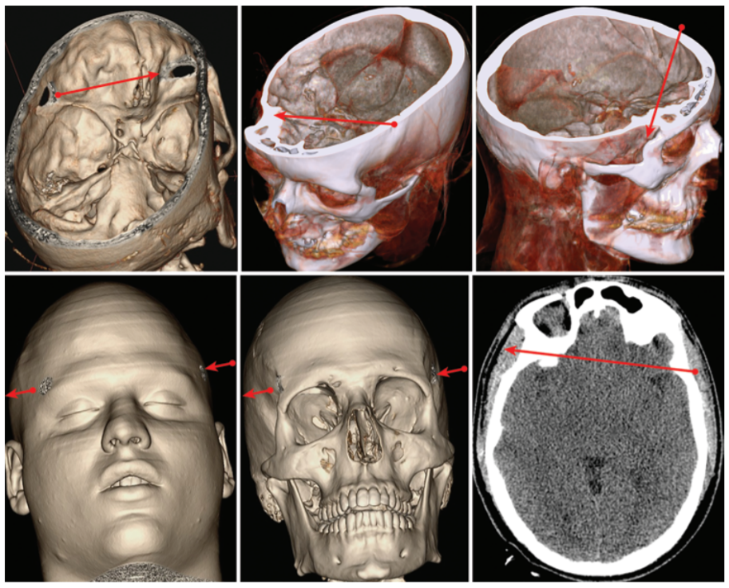
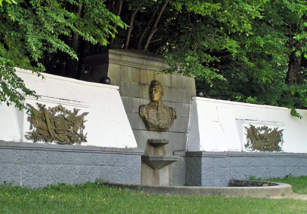
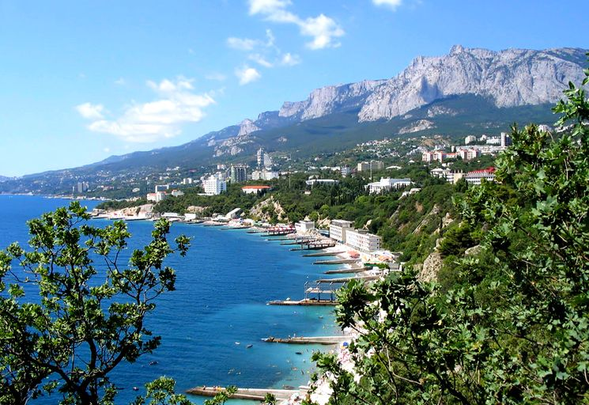
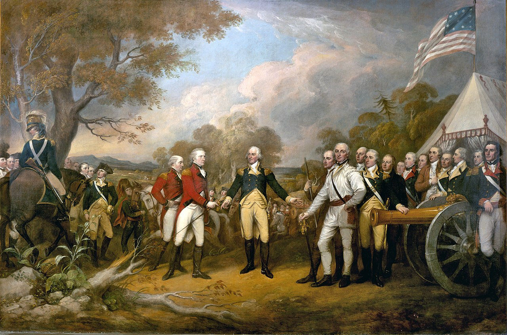

행운(?)의 쿠투조프 (1)
게시: 2020-06-15T06:30:08+09:00
알렉산드르가 쿠투조프를 싫어한 이유 중 하나는 그의 얼굴이었습니다. 정확하게 말하자면 그의 오른쪽 눈을 매우 싫어했지요. 심하게 뒤틀린 사팔뜨기 눈을 가지고 있었거든요. 그의 오른쪽 눈은 실명한 상태라는 말도 있고, 양쪽 눈이 다 잘 보였다는 말도 있습니다. 쿠투조프를 정말 영웅적인 현인으로 묘사한 톨스토이의 '전쟁과 평화'에서도 쿠투조프의 오른쪽 눈 실명 여부에 대해서는 다음과 같이 다소 애매하게 나옵니다.

(가만 보면 쿠투조프의 초상화는 대부분 얼굴을 살짝 오른쪽으로 돌린 포즈를 취하고 있어서 오른쪽 눈은 잘 보여주지 않습니다.)
---------------------
검열 이후 장교들의 쾌활한 분위기는 병사들에게도 퍼져 나갔다. 중대는 기분 좋게 행진했다. 사방에서 병사들의 잡담 소리가 들렸다.
"그리고 사람들이 그러는데 쿠투조프의 한쪽 눈은 보이지 않는다더군 ?"
"정말 그래 ! 완전히 실명 상태야 !"
"아니라네, 친구. 그 양반은 자네보다 시력이 더 좋던걸. 군화니 각반이니 하는 것들... 그 양반은 다 알아챈다구."
"그 분이 내 발을 쳐다보았을 때 말이야, 친구... 글쎄 내 생각엔..."
"그리고 그 분과 같이 있던 다른 사람, 그 오스트리아인 말이야, 마치 분필가루를 온통 발라놓은 것 같더군. 밀가루처럼 하얗더라니까 ! 아마 대포를 닦는 것처럼 그 양반도 닦아놓나봐."
---------------------
그런데 쿠투조프의 오른쪽 눈에는 굉장한 사연이 있었습니다. 찬찬히 보시지요.

(이 투박한 초상화는 1777년 쿠투조프가 그의 와이프에게 줄 결혼 선물로 주문한 자신의 초상화입니다. 이때 이미 쿠투조프는 머리에 큰 부상을 입고 오른쪽 눈이 비뚤어진 상태였으나, 이 무명의 초상화가에게 오른쪽 눈이 멀쩡한 것처럼 그려달라고 주문을 해서 이렇게 그렸다고 합니다. 과연 새신랑의 초상화를 결혼 선물이랍시고 받은 그 와이프가 기뻐했을지 모르겠습니다.)
쿠투조프(Mikhail Illarionovich Golenishchev-Kutuzov)는 1745년 상트 페체르부르그의 귀족 집안에서 태어났습니다. 아버지는 러시아 공병단에서 복무한 장군이었고, 쿠투조프도 나 어린 나이에 군사학교에 들어가서 군인의 길을 걸었습니다. 그는 머리가 좋은 소년이었고, 특히 어학에 뛰어난 재주를 보였습니다. 그는 이때 프랑스어, 독일어, 영어를 배워 유창하게 구사했으며, 나중에 군인 생활을 하면서 폴란드어, 스웨덴어, 투르크어도 익혔습니다. 뿐만 아니라 수학에도 뛰어나서 군사학교 졸업 직후에는 그 학교에서 수학을 가르치기도 했고, 수학에 뛰어난 똑똑한 군인들만 갈 수 있었던 포병대에서 군 생활을 시작했습니다.
1762년 17세의 어린 대위였던 쿠투조프는 당대의 명장인 수보로프(Alexander Vasilyevich Suvorov) 장군 밑에서 군 생활을 시작했습니다. 이건 쿠투조프로서는 대단한 행운이었습니다. 러시아 뿐만 아니라 당시 유럽에서 가장 뛰어난 지휘관 중 하나였던 수보로프에게서 지휘관으로서 갖추어야 할 자질에 대해서 제대로 배웠기 때문이었습니다. 지휘관의 명령은 단순, 명확, 간결해야 하며, 휘하 병사들의 훈련 뿐만 아니라 사기와 건강도 잘 챙겨야 한다는 것은 현대 기준으로서는 매우 상식적인 것이지만 당시 러시아군의 일반적인 분위기는 아니었거든요. 쿠투조프는 전반적으로 휘하 사병들에게서 인기가 나쁜 편이 아니었는데, 이때 수보로프의 가르침이 큰 영향을 미쳤던 것 같습니다.

(나폴레옹은 1800년 알프스를 넘었지만 실은 그 한 해 전인 1799년에 이미 수보로프가 알프스를 넘은 바 있습니다. 수보로프 장군의 인자한 표정과 쾌활한 병사들의 얼굴은 과장된 면이 있습니다만, 실제로 수보로프는 보급품도 부족한 1만6천의 병력을 거느리고 눈 덮힌 알프스를 거의 희생자 없이 넘는 묘기를 보여주었습니다.)
1770년 당시 25세의 젊은 소령였던 쿠투조프는 당대의 권력자이던 루미안체프(Pyotr Alexandrovich Rumyantsev-Zadunaisky) 공작 휘하에서 오스만 투르크군과 싸웠습니다. 쿠투조프는 용감히 싸웠으나 아무 훈장도 받지 못하고 곧 크림 반도의 부대로 쫓겨나듯이 전출되었는데, 그 이유는 젊고 장난기가 넘쳤던 쿠투조프가 루미안체프 공작의 흉내를 내며 조롱했다는 것을 동료 장교가 루미안체프 공작에게 고자질을 했기 때문이었습니다. 이때의 경험 때문인지, 쿠투조프는 이후 성격이 좀 바뀌어 사람이 좀 음흉하고 겉과 속이 다르다는 평가를 많이 받았습니다.

(루미안체프 공작입니다. 그는 매우 자존심이 강한 사람이라서 애송이 소령 나부랭이가 자신의 걸음걸이와 말투를 흉내내며 자신을 조롱했다는 고자질을 받고 불같이 화를 냈습니다. 쿠투조프가 그의 휘하에서 꽤 전공을 세웠기 때문에 그걸 참작해서 전출로 마무리 된 것이지 하마트면 쿠투조프의 인생이 끝장날 뻔한 사건이었습니다.)
이렇게 전출된 쿠투조프는 1773년 당시 오스만 투르크 영토이던 크림 반도의 알류쉬타(Alushta) 마을을 공격하다가 큰 부상을 입습니다. 탄환이 왼쪽 관자놀이를 뚫고 들어간 뒤에 오른쪽 관자놀이 근처를 뚫고 나온 것입니다. 한마디로 두개골 급소 부분에 관통상을 입은 것인데, 이건 누가 봐도 사망각이었고 뇌가 곤죽이 되는 것은 물론 두 개의 안구 모두 큰 박살이 나는 것이 정상인, 정말 엄청난 부상이었습니다. 보통 전투 보고서에는 많은 장교들의 전사나 부상을 알려야 했으므로, 일개 젊은 장교가 부상을 입든 전사를 하든 총에 맞았다 또는 칼에 베였다 등 간단하게만 기술하는 것이 보통이었습니다만, 당시 지휘관이던 돌고루코프(Vasiliy Dolgorukov)의 보고서에는 쿠투조프가 당한 부상에 대해 예외적으로 꽤 자세한 기술이 있습니다. 아마도 저런 중상을 입고도 살아있다는 것이 지휘관에게도 무척 신기하게 생각되었나 봅니다.
"이 장교는 총탄에 부상을 입었는데, 총탄이 관자놀이와 눈 사이를 관통하여 얼굴의 반대 방향 같은 곳을 뚫고 나왔습니다."
그런데 이런 끔찍한 부상을 입고도 쿠투조프는 죽지 않았습니다. 더 놀라운 것은 양쪽 눈 모두 시력을 잃지 않았다는 점이었습니다. 많은 사람들이 약간 비뚤어진 그의 오른쪽 눈을 보고 '최소한 오른쪽 눈은 실명을 했겠지' 라고 생각했지만, 실제로는 양쪽 눈 모두 잘 보였다고 합니다. 다만 이 부상으로 인해 쿠투조프는 두통과 어지러움에 시달렸습니다.

(당시 쿠투조프가 당했던 끔찍한 총상을 재현한 그림입니다. 저러고도 사람이 죽지 않을 수 있다니 정말 믿을 수 없는 일입니다.)

(알류쉬타에서 쿠투조프가 그 엽기적인 총상을 입은 장소 인근에는 '쿠투조프 샘'이라는 샘물에 쿠투조프의 부상을 기념하는 기념패까지 있습니다. 약간 엽기적으로 느껴지기도 합니다만, 그만큼 쿠투조프가 유명하다는 이야기지요.)

(쿠투조프가 큰 부상을 당해가며 점령한 흑해 크림 반도의 알류쉬타는 지금 러시아의 대표적인 휴양지가 되어 있습니다.)
이렇게 계속 통증에 시달리던 그는 결국 군을 잠시 떠나 독일에서 치료를 받았습니다. 1774년 그는 프로이센 포츠담에 자리를 잡았고, 여기서 당대의 영웅 프리드리히 대왕과 친교를 맺고 많은 담소를 나누었다고 합니다. 이후 그는 네덜란드를 거쳐 영국 런던도 방문하고 미국 독립 전쟁 소식도 접하는 등 견문을 넓혔습니다. 흔히들 말하길, 그는 런던에서 아메리카 식민지에서 벌어지는 전황을 상세히 공부했는데, 이때 워싱턴이 이끄는 식민지군이 매번 전투에는 패배하면서도 소모전을 통해 승기를 잡아가는 것을 보고 상당히 깊은 인상을 받았다고 합니다. 이때의 경험이 1812년 모스크바를 내주며 후퇴하는 과감한 초토화 전술의 계기가 되었다는 것이지요. 하지만 그건 나중에 미국인들이 짜맞춘 이야기가 분명해 보입니다. 미국 독립전쟁은 1775년에 시작해서 1783년에야 끝났으며, 당시엔 영국군이 압도적으로 식민지군을 몰아붙이던 상황이었기 때문입니다.

(미국 독립전쟁에서 일방적으로 밀리던 식민지군이 승기를 잡은 것은 사라토가(Saratoga)에서 영국군 버고인(John Burgoyne) 장군의 항복을 받아낸 것이었는데, 이 사건은 쿠투조프가 러시아로 돌아간 1777년에야 일어났습니다.)
2년 뒤인 1776년 러시아로 돌아온 그는 다시 수보로프 장군 밑에서 복무했고, '뭘 해야 할지 별도의 지시가 필요 없는 친구'라며 쿠투조프를 높게 평가한 수보로프 밑에서 그는 승승장구하며 1782년 마침내 준장으로 승진했습니다. 2년 뒤인 1784년 그는 소장으로 승진했고 1787년에는 크림 반도 전체에 대한 주지사가 되면서 지위는 갈 수록 높아졌습니다. 그러나 바로 다음 해에 오스만 투르크와의 전쟁이 또 벌어졌는데, 이때 정말 놀라운 일이 쿠투조프에게 벌어집니다. 매우 안 좋은 일이었습니다.
(다음 편에 계속)
Source : 1812 Napoleon's Fatal March on Moscow by Adam Zamoyski
https://en.wikipedia.org/wiki/Mikhail_Kutuzov
https://en.wikipedia.org/wiki/Millennium_of_Russia
https://thejns.org/downloadpdf/journals/neurosurg-focus/39/1/article-pE3.pdf
https://www.bbc.co.uk/blogs/writersroom/entries/5bbcb0cb-e28b-4605-894c-d9146f2cecb5
https://ru.wikipedia.org/wiki/Штурм_Очакова#/media/File:January_Suchodolski_-_Ochakiv_siege.jpg
{kind=link}
https://ief-usfeu.ru/en/kutuzov-kratkaya-biografiya-general-feldmarshala-kutuzov/